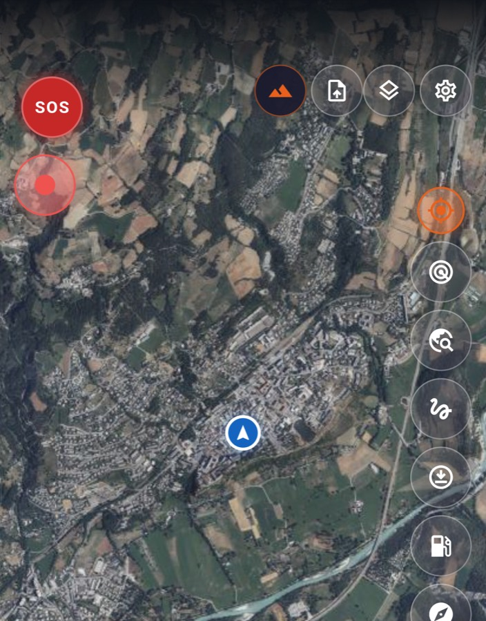
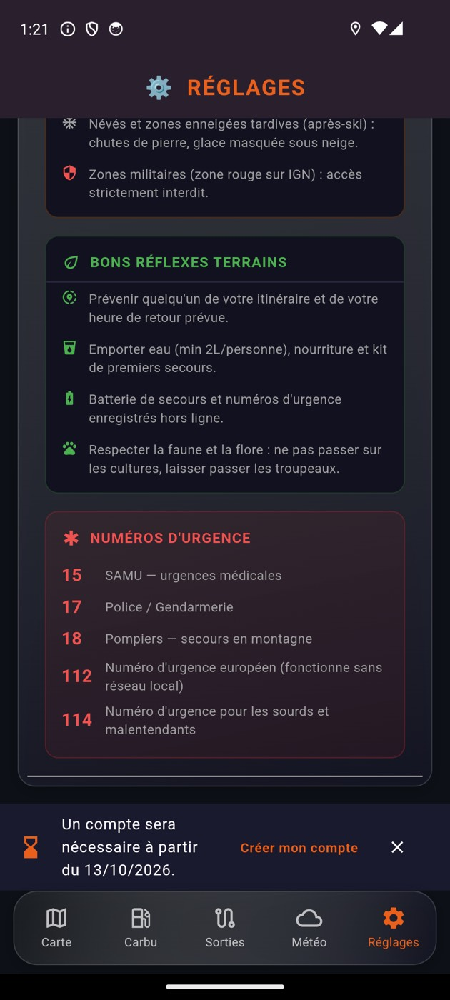

La carte de l'IGN, emportée
Le fond topographique officiel et la photo aérienne de la Géoplateforme, avec l'ombrage du relief pour lire une pente avant de s'y engager. Les zones déjà consultées restent affichables sans réseau — c'est une règle du produit : aucun fond n'est proposé s'il n'est pas emportable.

-
Hors ligne
Les tuiles déjà vues sont gardées sur le téléphone. Le fond de vallée sans réseau ne t'efface pas la carte.
-
Le relief
L'ombrage IGN creuse les vallées et fait ressortir les crêtes. Tu vois la pente avant de t'y engager.
-
Les traces
Enregistre ta sortie, retouche-la, fusionne deux segments. Partage-la ou reprends celle d'un autre.
-
Le guidage
Flèches de manœuvre, carte et trace toujours visibles, écran qui reste allumé. Lisible avec des gants.
Si tu tombes et que personne ne te voit
L'accéléromètre et le GPS détectent un choc suivi d'une immobilité. Un compte à rebours s'affiche. Sans réaction de ta part, l'alerte part vers tes contacts de confiance avec ta position — par SMS depuis le téléphone et par le serveur.
-
Détection de chute
Trois signaux doivent converger : le choc, l'orientation d'arrivée, et les vibrations retombées. Un nid-de-poule ne déclenche rien.
-
Compte à rebours
Tu gardes la main : un geste annule l'alerte. Le délai se règle selon le terrain que tu pratiques.
-
Suivi solo
Tes proches suivent ta progression sur un lien, sans installer quoi que ce soit. Tu coupes quand tu veux.
-
Mode groupe
Jusqu'à vingt pilotes se voient en direct sur la même carte, avec un point de ralliement partagé.
Ce que dit la loi, avec toi sur la piste
Loi Lalonde, chemins ONF, pistes DFCI, espaces naturels sensibles, règles du bivouac sauvage, zones à risque. Consultable hors ligne, au moment où la question se pose — pas au retour, quand c'est trop tard.

L'app est en test. Viens l'éprouver.
Elle roule déjà, mais elle a besoin de vrais terrains et de vrais retours. Si tu sors régulièrement en moto tout-terrain ou en 4×4, ta place est ici.
Rejoindre les testsLe lien d'inscription TestFlight arrive. En attendant, écris à contact@gofree.fr en disant ce que tu roules et où — on t'ajoute à la prochaine vague.
Couverture France. Les fonds cartographiques viennent de l'IGN et s'arrêtent aux frontières. Hors de France, l'app n'a pas de carte à te montrer.
La suite
Le camping-car rejoindra la moto et le 4×4 : mêmes cartes, mêmes traces, mêmes secours, avec ce qu'il faut en plus pour voyager en autonomie. Pas de date annoncée tant que ce n'est pas prêt.
- Camping-car en construction